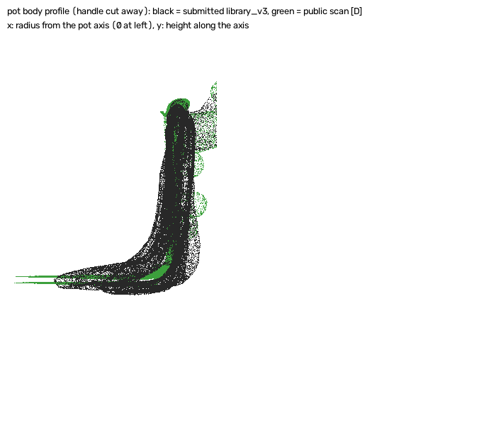

The meshes we submit for the 20 eval episodes, what they look like against the eval videos, and what the new mesh methods produce on public episodes, where a scan lets us measure them. New-method meshes for the eval episodes: the cup lathes need one GPU step first; the new kit-of-parts pot, lid and rack are built from public episodes like the submitted library and are ready (see the end of the page).
Drag to rotate, scroll or pinch to zoom. The section cut slices the mesh so you can see wall thickness: the real cups have 2–3 mm walls. Every mesh here went through the kit's own 4,096-face decimation, so this is what Kaggle receives.
Each object is built from a few simple parts (a thin lathe body, a bar handle, a sheet and arch, a tray with a cup holder and pegs, marker balls), each fitted to our own stereo points along our own tracks. No ground truth goes in. The fitting picks among candidates by how well they explain our points. Only then was each pick scored once against the public scan. Open them in the viewer above (groups Pot lid, Dish rack, Board 1, and the kit-of-parts pot).
| Object | Eval pairs | CD-O, submitted → new | Registration offset (ADD) | Flips | Verdict |
|---|---|---|---|---|---|
| White pot | 6 | 0.437 → 0.342 cm | 6.7 → 3.1 mm | 0 / 8 | pass |
| Pot lid | 1 | 0.421 → 0.220 cm | 8.1 → 4.5 mm | 0 / 6 | pass |
| Dish rack | 5 | 0.555 → 0.456 cm | 6.0 → 5.4 mm | 0 / 7 | pass |
| Board 1 | 1 | 0.222 → 0.189 cm | 2.4 → 3.3 mm | 1 / 6 | fail (flip) |
| Board 2 | 1 | 0.216 → 0.229 cm | 3.6 → 78.7 mm | 3 / 6 | fail (other board's track) |
Pass rule, fixed before any result: CD-O at least 0.03 cm better than the submitted mesh, offset at most 1 mm worse, and no flips. An audit found that the first lid and rack fits used wall thicknesses quoted from the scans. A second, pre-registered run over 1.5, 2.5 and 4 mm passed at every value (lid 0.220–0.224 cm, rack 0.449–0.458 cm), so the result does not depend on that number. Known defects: one spurious ball on the pot handle, no handle hole, a straight-walled rack cup holder, and no slots on the boards.
One colour frame per object, chosen without ground truth (object at rest, fully in view). Red tint: our submitted mesh projected with our own track. Green line: the object's outline found in the image. Where the two disagree, either the mesh shape or the track is off. A review panel checked each image; its notes are under the pictures.
| Priority | Object | Eval pairs | Verdict | Main issues (upheld by a second reviewer) | Recommended method |
|---|

| Step | Why | Cost | Status |
|---|---|---|---|
| Recompute stereo depth for the eval videos and store it | The new methods need depth from many frames. Only frame 0 of each eval episode was kept; a single frame failed on public data (CD-O 1.1–1.3 cm, flips). | ≈ $2–4, 1 GPU, ≈ 1 h | needs go-ahead |
| Use the kit-of-parts pot, lid and rack for eval | Built from public episodes and in the same object frame as the submitted library (2–4 mm apart without registration), so no eval depth is needed. If the hidden scans match the public ones, CD-O 0.402 → about 0.367 cm (estimate). The open question is whether to swap only the packed mesh or the simulator copy too. | $0 pack-only; GPU re-runs if the simulator copy changes | owner decision |
| Thin-wall lathe for cups (CPU here) | Blue cup 0.523 → 0.291 cm on public data. The cups have no public-library replacement yet, so they need eval depth. | $0 | ready, waits on depth |
| Generative probe: SAM 3D, TRELLIS.2, Hunyuan3D-2.1 on our crops, then fit to our points | The only route in the literature to about 1 % of object size; never tried here. | ≈ $4–8, ceiling $12 | needs permission + go-ahead |